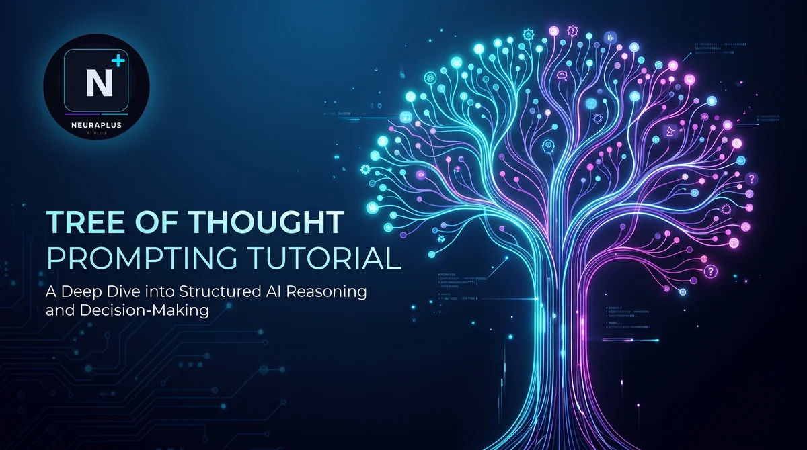

Tree of Thought Prompting Tutorial: Master Structured AI Reasoning

Imagine you're solving a complex puzzle. Do you just follow the first path that comes to mind? Or do you explore multiple possibilities, evaluate which ones look promising, and backtrack when you hit a dead end?
If you choose the second approach, congratulations — you're already thinking like Tree of Thought prompting.
Tree of Thought (ToT) is revolutionizing how we interact with AI systems. It's not just about getting answers; it's about enabling AI to think strategically, explore multiple reasoning paths, and make better decisions — just like humans do when solving complex problems.
In this comprehensive tutorial, I'll walk you through everything you need to know about Tree of Thought prompting. Whether you're building AI applications or just want to get better results from ChatGPT, Claude, or other language models, this guide will transform how you approach problem-solving with AI.
What Is Tree of Thought Prompting?
Tree of Thought prompting is an advanced reasoning framework that allows language models to explore multiple lines of reasoning simultaneously, evaluate their progress, and make strategic decisions about which paths to pursue.
Think of it this way: if Chain of Thought prompting is like walking down a single hallway, Tree of Thought is like exploring an entire maze with multiple corridors, dead ends, and potential solutions.
Key Insight: Tree of Thought prompting was introduced by researchers at Princeton and Google DeepMind in 2023 as a way to overcome the limitations of linear reasoning. It enables AI systems to perform deliberate decision-making by considering multiple reasoning paths and backtracking when necessary.
The Core Difference: Linear vs. Branching Thinking
Traditional prompting approaches follow a linear path:
- Standard prompting: Question → Answer
- Chain of Thought: Question → Step 1 → Step 2 → Step 3 → Answer
Tree of Thought creates a branching structure:
- Question → Multiple Step 1 options → Evaluate → Choose best → Multiple Step 2 options → Evaluate → Continue or backtrack
Why Tree of Thought Matters
Here's what makes ToT prompting a game-changer:
1. Better Problem-Solving
Complex problems rarely have obvious solutions. By exploring multiple approaches, ToT helps AI find better answers than it would with a single reasoning path.
2. Strategic Decision-Making
ToT enables AI to think ahead, evaluate consequences, and make strategic choices — crucial for tasks like planning, game playing, and complex analysis.
3. Error Correction
When one path leads to a dead end or incorrect result, ToT allows the AI to backtrack and try alternative approaches instead of continuing down a flawed path.
4. Creative Exploration
For creative tasks, ToT enables the exploration of multiple ideas and approaches, leading to more innovative and diverse outputs.
Real-World Impact: Research shows that Tree of Thought prompting can improve performance on complex reasoning tasks by 20-70% compared to Chain of Thought, depending on the problem complexity.
The Five Key Components of Tree of Thought
To implement Tree of Thought effectively, you need to understand its five core components:
1. Thought Decomposition
Breaking down complex problems into manageable thought steps. Instead of solving everything at once, you divide the problem into smaller, sequential decisions.
# Example: Planning a vacation Thought 1: Choose destination Thought 2: Set budget range Thought 3: Select travel dates Thought 4: Book flights Thought 5: Arrange accommodation
2. Thought Generator
Creating multiple possible next thoughts from the current state. This is where the "tree" branches out.
# From "Choose destination" you might generate: Branch A: Beach vacation (Maldives, Bali, Caribbean) Branch B: Cultural exploration (Japan, Italy, Egypt) Branch C: Adventure travel (New Zealand, Peru, Iceland)
3. State Evaluator
Assessing the promise of different states (partial solutions). This helps decide which branches to explore further.
# Evaluation criteria: - Feasibility (Can we actually do this?) - Alignment (Does this meet our goals?) - Cost (Is it within budget?) - Time (Does it fit our schedule?)
4. Search Algorithm
Deciding which branches to explore and in what order. Common approaches include:
- Breadth-First Search (BFS): Explore all options at each level before going deeper
- Depth-First Search (DFS): Follow one path deeply before trying alternatives
- Beam Search: Keep only the top-k most promising paths at each level
5. Backtracking Mechanism
The ability to return to previous states when a path proves unfruitful. This is what separates ToT from simple branching.
Tree of Thought vs. Chain of Thought: When to Use Each
Understanding when to use ToT versus Chain of Thought prompting is crucial for getting the best results.
Use Chain of Thought When:
- The problem has a clear, linear solution path
- You need quick, straightforward answers
- The task involves mathematical calculations or logical deductions
- There's one correct answer
Use Tree of Thought When:
- Multiple valid approaches exist
- The problem requires strategic planning
- You need creative solutions
- The task involves complex decision-making
- Early decisions significantly impact later options
Pro Tip: You can combine both approaches! Start with ToT to explore high-level strategies, then use CoT within each branch for detailed execution.
Practical Tree of Thought Examples
Let me show you how ToT works in real scenarios.
Example 1: Business Strategy Planning
PROMPT: "You're helping a startup decide their go-to-market strategy. Use Tree of Thought reasoning to explore multiple approaches. Problem: Launch a new AI writing assistant Step 1: Generate 3 different target market segments Step 2: For each segment, identify 2 distribution channels Step 3: Evaluate each combination based on: - Market size - Competition level - Resource requirements Step 4: Select the top 2 strategies and develop action plans Show your reasoning tree with evaluations at each branch."
Example 2: Creative Writing
PROMPT: "Write a mystery story using Tree of Thought prompting. Step 1: Generate 3 different crime scenarios Step 2: For each scenario, create 2 possible detective characters Step 3: Develop 2 potential plot twists for each combination Step 4: Evaluate which combination offers: - Most engaging mystery - Best character development - Most satisfying resolution Step 5: Write the opening scene for the best option Show your thought tree and evaluation process."
Example 3: Complex Problem Solving
PROMPT: "Solve this optimization problem using Tree of Thought: Problem: Optimize a delivery route for 5 locations with time windows and capacity constraints. Approach: 1. Generate 3 different route sequencing strategies 2. For each strategy, explore 2 timing optimizations 3. Evaluate each solution on: - Total distance - Time window compliance - Fuel efficiency 4. Backtrack and refine the best solution 5. Present the final optimized route Show all branches and your evaluation reasoning."
How to Implement Tree of Thought Prompting
Here's a step-by-step framework you can use right away:
Step 1: Define the Problem Clearly
Start with a well-defined problem statement. The clearer your problem, the better your thought tree will be.
Step 2: Specify the Number of Branches
Tell the AI how many options to generate at each step. Too few limits exploration; too many creates analysis paralysis.
# Good specification "Generate 3 different approaches at each decision point."
Step 3: Establish Evaluation Criteria
Define how to assess each branch. Be specific about what makes one path better than another.
Step 4: Set the Search Strategy
Specify whether to explore broadly (BFS) or deeply (DFS), and how many paths to keep.
Step 5: Include Backtracking Instructions
Explicitly tell the AI it can and should backtrack when paths prove unfruitful.
Step 6: Request Transparent Reasoning
Ask the AI to show its thought tree, evaluations, and decision points.
Common Mistake: Don't skip the evaluation step! The power of ToT comes from deliberate assessment and selection, not just generating multiple options.
Advanced Tree of Thought Techniques
Once you master the basics, try these advanced strategies:
1. Hybrid ToT-CoT Approach
Use Tree of Thought for high-level strategy, then Chain of Thought for detailed execution within each branch. This is particularly effective when combined with few-shot prompting examples to guide the AI.
2. Iterative Refinement
Run multiple ToT passes, using insights from earlier iterations to refine your approach.
3. Multi-Agent ToT
Use different AI personas to evaluate branches from different perspectives (e.g., optimist, pessimist, pragmatist).
4. Constraint-Based Pruning
Set hard constraints that automatically eliminate branches that don't meet minimum criteria.
5. Confidence Scoring
Have the AI assign confidence scores to each branch and use these to guide exploration.
Optimizing Tree of Thought for Different AI Models
Different AI models respond differently to ToT prompting:
For Claude (Anthropic)
Claude excels at structured reasoning. Use clear hierarchical formatting and explicit evaluation rubrics. Check out our guide on best prompts for Anthropic Claude AI for model-specific techniques.
For GPT-4 (OpenAI)
GPT-4 handles complex branching well. Use numbered steps and ask it to maintain a "state tracker" showing current position in the tree.
For Gemini (Google)
Gemini benefits from visual descriptions of the tree structure. Use metaphors and spatial language.
Tool Recommendation: Consider using AI prompt generators to help structure your ToT prompts, especially when you're starting out.
Common Challenges and How to Overcome Them
Challenge 1: Token Limit Exhaustion
Problem: ToT can consume many tokens quickly.
Solution: Use beam search to limit branches, or break the problem into multiple sessions.
Challenge 2: Analysis Paralysis
Problem: Too many branches lead to indecision.
Solution: Set strict limits (e.g., "Generate exactly 3 options, choose the best 2") and use clear evaluation criteria.
Challenge 3: Inconsistent Evaluations
Problem: The AI evaluates similar branches differently.
Solution: Provide a scoring rubric with specific, measurable criteria.
Challenge 4: Shallow Exploration
Problem: The AI explores many branches but none deeply enough.
Solution: Specify minimum depth requirements and use DFS for complex branches.
Measuring Tree of Thought Success
How do you know if your ToT prompting is working? Track these metrics:
- Solution Quality: Are the final answers better than single-path approaches?
- Diversity: Does the AI explore genuinely different approaches?
- Efficiency: Is the exploration focused, or wasting tokens on obviously bad paths?
- Convergence: Does the AI converge on good solutions consistently?
Tree of Thought Use Cases
Here are the areas where ToT shines:
Business & Strategy
- Strategic planning
- Market analysis
- Product development roadmaps
- Risk assessment
Creative Work
- Story development
- Campaign ideation
- Design exploration
- Content strategy
Technical Problem-Solving
- Algorithm design
- System architecture
- Debugging complex issues
- Optimization problems
Research & Analysis
- Literature review planning
- Hypothesis generation
- Experimental design
- Data analysis strategies
The Future of Tree of Thought Prompting
Tree of Thought prompting is evolving rapidly. Here's what's coming:
Automated ToT Systems
Future AI systems will automatically decide when to branch, evaluate, and backtrack without explicit prompting.
Visual Tree Interfaces
Tools that let you visualize and interact with the reasoning tree in real-time.
Hybrid Human-AI Trees
Systems where humans and AI collaborate, each contributing to different branches of the tree.
Domain-Specific ToT Frameworks
Specialized ToT templates for specific industries and use cases.
Frequently Asked Questions
Final Thoughts: Your Tree of Thought Journey
Tree of Thought prompting represents a fundamental shift in how we interact with AI. It's not just about asking better questions — it's about enabling AI to think more like humans do when solving complex problems: exploring options, evaluating trade-offs, and adapting strategies.
Start simple. Pick a moderately complex problem and practice creating thought trees with 2-3 branches. As you get comfortable, gradually increase complexity and explore advanced techniques.
Remember, the goal isn't to explore every possible path — it's to explore smart paths strategically. Quality of exploration beats quantity every time.
Ready to take your prompting to the next level? Combine Tree of Thought with other advanced techniques like few-shot prompting and model-specific optimization from our Claude AI prompts guide.
The future of AI interaction is here, and it branches in multiple directions. Which path will you explore first?